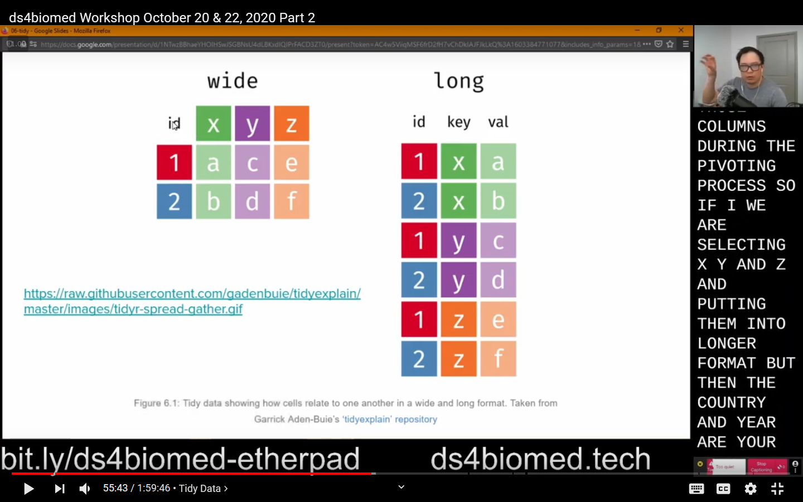
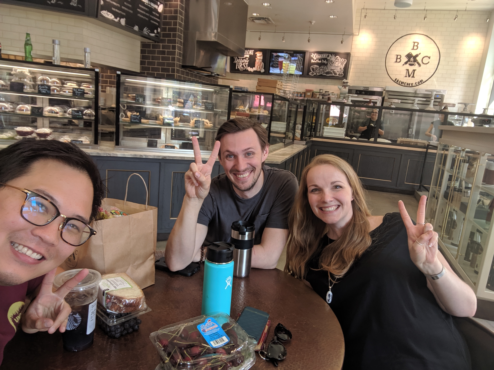
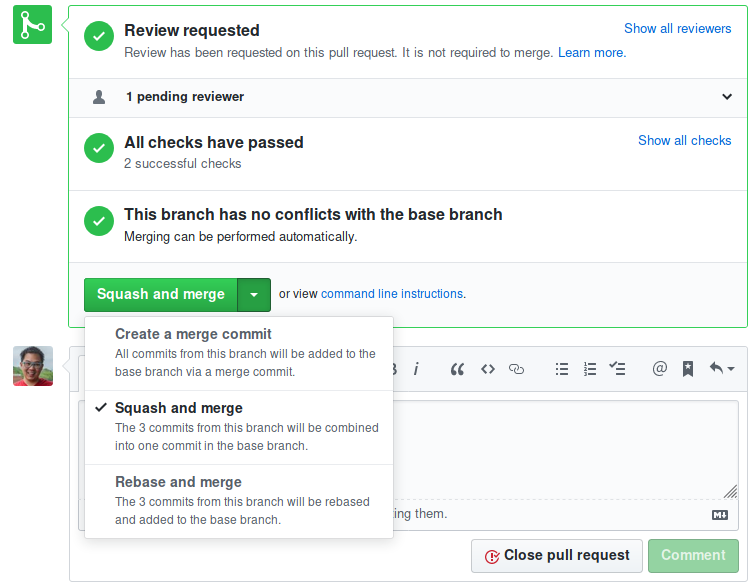

Daniel Chen
Home
Blog
About
Blog
The Vancouver Cherry Blossom Marathon
A Data-Driven Guide to the City’s Most Spectacular Streets
Using data from the Vancouver Open Data Portal, some vibes, and lots of checking We have the Vancouver Cherry Blossom (Ultra?) Marathon!
Mar 30, 2026

Using OBS for Online Teaching
Open Broadcaster Software (OBS) is a featured and popular used to lay out your screen for recording and streaming. V26 of OBS Studio was released mid October 2020, and it…
Oct 27, 2020
Daniel Chen
Upgrading Marlin 2.0+ with Mesh Bed Levling CR-10s
Video guide from “The First Layer”: https://www.youtube.com/watch?v=-rOZpOiWYxM
May 24, 2020
Daniel Chen
Python Environments with Conda
Anaconda (and these days miniconda) has been my go-to for getting Python and the scientific/data science software stack installed on my computer (even on my Arch linux…
Feb 29, 2020
Daniel Chen
R Hex Bowtie
If you were at rstudio::conf you may have seen me walking around with my conference badge and wondered what everything is.
Jan 30, 2020
Daniel Chen

My time as an RStudio Intern
When internships are more than technical training
I’ve had a lot of time to think about my time as an RStudio intern. When I do, I usually end up with a few words in my head before I’m flooded with (good) emotions and…
Jan 29, 2020
Daniel Chen
Table of Model Results using kable and kableExtra
I’m at the R/Medicine conference (no it’s not a Reddit thing) and got to help Alison Hill with her R Markdown for Medicine workshop. One of the questions I got to tinker…
Sep 13, 2019
Daniel Chen
R or Python, which One to Learn (First)?
Pick one, learn it well, skills will transfer over
I’ve been asked a few times lately about whether one should learn R or Python.
Aug 28, 2019
Daniel Chen

Git Squash and Merge Workflow
Doing gitmastics as an RStudio intern
I have a love-hate relationship with Git. It took me years of following cookbooks and following strict set of commands to get a sense of how it works. I still have to spend…
Aug 27, 2019
Daniel Chen
Inconsistencies with the
==
operator in R
I found a bug with the == operator in R!
One of the cool things about working on
gradethis
(
grader
need to be renamed) is that we end up doing things that aren’t common in R (i.e., grading and comparing code).
Aug 6, 2019
Daniel Chen
Mounting Oclus Rift Sensors on the Wall
Still looking for a way to hide my cables behind the desk…
I was initially going to get some small bookshelves to put my Oculus sensors on, but you can take your Oculus sensors off the stand! This way you wont have an awkward way to…
Aug 3, 2019
Daniel Chen
New Website a la Blogdown!
At least I accomplished something this internship! xD
I finally got everything moved over to blogdown with the Hugo Academic theme. Thanks so much to Allison Hill, who ran the summer-of-blogdown tutorial for us RStudio interns.
Jul 23, 2019
Daniel Chen
RStudio internship week 2
I think I can make it through the summer
The main topics and events of last week were:
Jun 18, 2019
And we’re off! RStudio internship week 1, complete.
First week of internship is over and I can’t believe this is actually happening
I’m still pinching myself about being one of the RStudio interns this year. It’s an unbelievable opportunity and I’ve been half panicked and fighting imposter syndrome since…
Jun 10, 2019
rstatsnyc as told by
@brookLYNevery1
,
@dataandme
, and autographs
An ongoing set up updates about what happened at the 2018 NYC R Conference
EDIT: I’ve added the notes from
@dataandme
and linked to people’s twitter and slides (if I found them). This is probably going to be an ongoing process…
Apr 22, 2018
Analysis-Based Project Templates
One of the most annoying things you hear people say when they are working with some common code base is “It works on my machine…”. Conversely, one of the more satisfying…
Jan 23, 2018
From VMs to LXC Containers to Docker Containers
Since I’ve joined SDAL, the lab has undergone a few infrastructure related changes, mainly how applications are run on the servers. From what I remember, we started using Vir…
Jul 7, 2017
Project Templates
Project templates provide some standardized way to organize files. Our lab uses a template that is based off the Noble 2009 Paper, “A Quick Guide to Organizing Computational…
May 30, 2017
Changes in Higher Education
As a PhD student who already has a Master’s degree, it’s safe to say that I’ve been in school for a long time. One of the things in higher education that I started to…
May 1, 2017
NYC R Conference
Just got back from the 3rd annual NYC R Conference this past weekend. I have been honored to be one of the few speakers for the 3rd year in a row. This year’s talk, “So You…
Apr 24, 2017
Preparing for the Summer
As the semester comes to an end, preparing for my lab’s Data Science for the Public Good Program begins. I’ve started a GitHub group to dump the various components we will…
Apr 24, 2017
Working While Pursuing a PhD
My lab has extended me an opportunity to be a research scientist and helping out our current senior data scientist with the daily analytics and IT support the lab needs.…
Apr 17, 2017
Education in the United States
As people start sharing their educational experiences from around the world, I realized how lucky I am to have been educated in New York City, and how much less the United…
Apr 10, 2017
Open Access
“Open” has played in important role in my life the last few years. It all began when I was an attendee at a Software-Carpentry workshop back in 2013. Before then, I only…
Apr 10, 2017
The People that Keep Me Sane
Coming from CUNY Hunter College, I never really had the typical ‘college experience’. Going to college for me was almost no different than going to high school since so many…
Apr 3, 2017
Tech & Innovation in Higher Ed
How faculty (higher education) are using and/or reacting to social media, MOOCs, and/or other “disruptive” technologies.
Apr 3, 2017
A ‘Simple’ Neural-Network Model
My previous blog post summarized the main points of the Watts 2002 paper. At the very end of the post I mentioned ways we can extend the Watts model with neural-networks.…
Mar 30, 2017
Should You Attend Grad School?
I’ve been asked a few times about whether one should attend graduate school. I usually follow up by asking whether they are planning to do a Master’s or a Doctorate.
Mar 27, 2017
Scientific Programming
Software-Carpentry played an integral part of who I am today. I am always trying to learn and follow best practices in the context of scientific programming, which I think…
Mar 27, 2017
From NYC to Blacksburg, VA
I’m from New York City. Born and raised in Queens, and went to school in Manhattan for high school, college, and masters. So, coming down to rural Blacksburg, VA has been a…
Mar 20, 2017
My Story
How did I get to where I am today.
Mar 20, 2017
What You Call Yourself is Important
I am a PhD
Student
, not a candidate… yet.
Mar 13, 2017
Research Ethics
The Office of Research Integrity (ORI) oversees and directs Public Health Service (PHS) research integrity activities on behalf of the Secretary of Health and Human Services…
Mar 12, 2017
Some Modest Advice for Graduate Students
Some Modest Advice for Graduate Students by Stephen C. Stearns
Mar 6, 2017
How Learning Works
Susan Ambrose’s book “How Learning Works” is probably one of the best investments for people who teach. The next best (time) investment is reading Greg Wilson’s paper on “Sof…
Mar 6, 2017
Teaching and Mentoring
Software-Carpentry1 has made be a better teacher because of the way we collect feedback during our workshops. When teaching a technical class, we use low-tech sticky notes…
Feb 27, 2017
Where Do I Fit in Academia?
It’s always a good idea to take a break and think about all that’s going on in life in perspective. As I approach the end of the coursework phase of my PhD program, I need…
Feb 20, 2017
Communicating Science
The communication science workshop at class reminds me of the various acting warm-up exercise I did when I took an acting class in high school. The drills require…
Feb 13, 2017
Accessible Education in the United States
In the United States, higher education aims to be accessible to everyone. Although historically, college and university degrees were mainly for privileged, white males…
Feb 6, 2017
Impostor Syndrome: Am I Qualified?
Impostor syndrome (also known as impostor phenomenon or fraud syndrome) is a concept describing high-achieving individuals who are marked by an inability to internalize…
Feb 6, 2017
Journal: Why am I Journaling?
I’m taking “Preparing the Future Professoriate” this semester at Virginia Tech, which is one of the core classes for the “Future Professoriate Certificate”.
Jan 30, 2017
Mission Statements
Mission statements and reflections on higher education institutions (plus one high school) that I’ve attended.
Jan 30, 2017
SWC: What the Carpentries Mean To Me
https://software-carpentry.org/blog/2016/10/what_swc_means_to_me.html
Oct 26, 2016
Expanding the Watts Model
I wrote a blog post and gave a seminar talk about the Watts 2002 paper. The next step is thinking about expanding the
binary decisions with externalities
model to a
psycholog…
Sep 29, 2016
A Simple Model of Global Cascades on Random Networks
Duncan J Watts wrote a paper that was published in 2002 titled “A simple model of global cascades on random networks” in the Proceedings of the National Academy of Sciences…
Aug 31, 2016
Scientific ‘Purity’ in the ‘Connected Age’
I just started reading
Six Degrees: The Science of a Connected Age
by Duncan J. Watts. It’s a book on network theory and related to the Multi-Agent Neural Network project…
Mar 14, 2016
SWC: Software Carpentry as a University Course
https://software-carpentry.org/blog/2016/02/swc-as-a-university-course.html
Feb 5, 2016
SWC: Teaching Bimodal Workshops with a Large Range
https://software-carpentry.org/blog/2015/11/teaching-extreme-ranges.html
Nov 5, 2015
SWC: Assessing Our Learners Part I
https://software-carpentry.org/blog/2015/06/learner-assessment-part-01.html
Jun 23, 2015
Getting Started with Data Science and Analysis
I’ve been an instructor for Software-Carpentry (SWC) over a year now. It’s been a facinating experience and I’m proud to be a part of an open source movement promoting best…
May 5, 2015
SWC: Cookie Cutter
https://software-carpentry.org/blog/2015/02/cookie-cutter.html
Feb 10, 2015
Open Source A Python Project I
I started my first open source project towards the end of summer 2014 I began working at the Social Decision Analytics Laboratory at the Virginia Informatics Institutee. The…
Feb 5, 2015
SWC: Revamping the Instructor Survey
https://software-carpentry.org/blog/2014/11/revised-instructor-survey.html
Nov 2, 2014
Hacking Your MetroCard to $0.00
Earlier this month, Ben Wellington wrote a blog post about How Memorizing “$19.05” Can Help You Outsmart the MTA. A few days later, after the post went viral, the MTA respond…
Sep 29, 2014
Welcome to Jekyll!
You’ll find this post in your
_posts
directory. Go ahead and edit it and re-build the site to see your changes. You can rebuild the site in many different ways, but the most…
Sep 7, 2014
SWC: Our First High School Workshop at Rockefeller University
https://software-carpentry.org/blog/2014/07/high-school-students-at-rockefeller.html
Jul 7, 2014
Absolute and Relative Directories in Python
One of the most common tasks (for me at least) is saving or getting data from another directory from where the current python script is running. However, for many of the…
May 16, 2014
Daniel
Installing Eclipse in Ubuntu 13.10
Adapted answer from Shubhmay and TimD on askubuntu on installing Eclipse.
Feb 4, 2014
Daniel
Setting Up Repast Simphony 2.1 in Linux
Repast Simphony is a Java based collection of agent-based modeling and simulation software.
Feb 4, 2014
Daniel
Setting up a WebDAV Client for Courseworks
Columbia University’s Courseworks website allows you to download files for a registered class. A problem arises when multiple files needed to be downloaded simultaneously.…
Sep 4, 2013
Daniel
Setting up VirtualBox
Edit: March 31, 2014: As an assignment for Software Carpentry I made a screencast to follow along with these steps, here
Feb 21, 2013
Daniel
No matching items